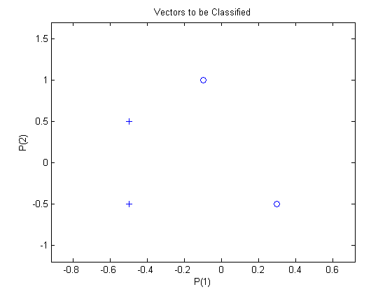
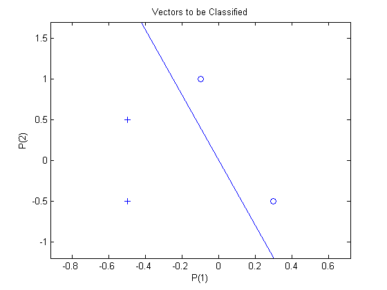
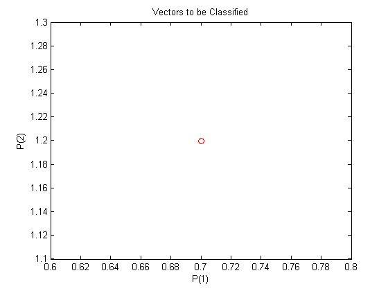
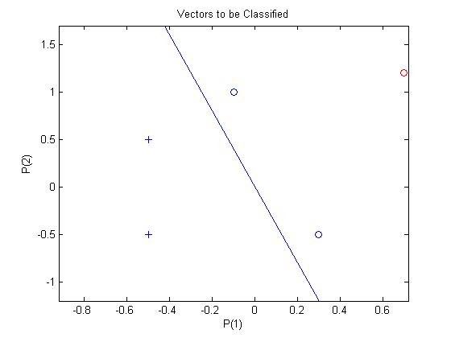

Classification with a 2-Input Perceptron
A 2-input hard limit neuron is trained to classify 5 input vectors into two categories.
Each of the five column vectors in X defines a 2-element input vectors and a row vector T defines the vector's target categories. We can plot these vectors with PLOTPV.
X = [ -0.5 -0.5 +0.3 -0.1; ...
-0.5 +0.5 -0.5 +1.0];
T = [1 1 0 0];
plotpv(X,T);
 The perceptron must properly classify the 5 input vectors in X into the two categories defined by T. Perceptrons have HARDLIM neurons. These neurons are capable of separating an input space with a straight line into two categories (0 and 1).
Here PERCEPTRON creates a new neural network with a single neuron. The network is then configured to the data, so we can examine its initial weight and bias values. (Normally the configuration step can be skipped as it is automatically done by ADAPT or TRAIN.)
net = perceptron; net = configure(net,X,T);
The input vectors are replotted with the neuron's initial attempt at classification.
The initial weights are set to zero, so any input gives the same output and the classification line does not even appear on the plot. Fear not... we are going to train it!
plotpv(X,T);
plotpc(net.IW{1},net.b{1});
Here the input and target data are converted to sequential data (cell array where each column indicates a timestep) and copied three times to form the series XX and TT.
ADAPT updates the network for each timestep in the series and returns a new network object that performs as a better classifier.
XX = repmat(con2seq(X),1,3);
TT = repmat(con2seq(T),1,3);
net = adapt(net,XX,TT);
plotpc(net.IW{1},net.b{1});
 Now SIM is used to classify any other input vector, like [0.7; 1.2]. A plot of this new point with the original training set shows how the network performs. To distinguish it from the training set, color it red.
x = [0.7; 1.2]; y = net(x); plotpv(x,y); point = findobj(gca,'type','line'); set(point,'Color','red');
Turn on "hold" so the previous plot is not erased and plot the training set and the classification line.
The perceptron correctly classified our new point (in red) as category "zero" (represented by a circle) and not a "one" (represented by a plus).
hold on; plotpv(X,T); plotpc(net.IW{1},net.b{1}); hold off;